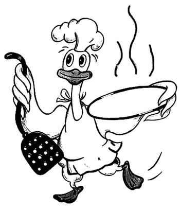

Супы-пюрэ, бульоны, консомэ
 Суп-пюре с белым соусом
Суп-пюре с белым соусом
Приготовить белый соус из куриного бульона (см. Суп-пюре из курицы с мандаринами), варить 40 минут, добавить томатный соус, затем положить сваренные и нарезанные по 5 мм макароны, ломтики сваренных трюфелей, ветчины и белых грибов. Заправить суп свежими сливками и яичными желтками и добавить сливочное масло.
Состав: куриный соус — 600 г, томатный соус —150 г, макароны — 75 г, трюфели — 10 г, ветчина — 25 г, грибы — 25 г, сливки — 50 г, яйцо — 1 шт., масло — 25 г.
Суп-пюре из курицы с мандаринамиСварить курицу, отделить мясо от костей, оставить часть филе для гарнира, а остальное мясо пропустить два-три раза через мясорубку и, добавив 2–3 столовые ложки холодного бульона, протереть через сито.
Муку поджарить с двумя столовыми ложками масла, развести четырьмя стаканами горячего бульона, довести до кипения и кипятить 1–3 минуты. Полученный соус процедить, положить в него приготовленное из курицы пюре, перемешать и, если суп получился очень густой, разбавить горячим бульоном и довести до кипения. Затем снять с огня, посолить, заправить сливочным маслом и яичными желтками, смешанными с молоком.
При подаче к столу положить в суп мелко нарезанное филе и свежие мандариновые дольки. Отдельно подать гренки.
Состав: курятина — 700 г, масло сливочное — 4 ст. ложки, мука — 2 ст. ложки, мандарины — 4 шт.; для заправки: яйца — 2 шт., сливки или молоко — 1 стакан.
Суп-пюре из курицыСварить курицу, отделить мясо от костей, оставить немного филе для гарнира, а остальное мясо пропустить два-три раза через мясорубку и, добавив 2–3 столовые ложки холодного бульона, протереть сквозь сито. Муку поджарить с двумя столовыми ложками масла, развести четырьмя стаканами горячего бульона и проварить в течение 20–30 минут. Полученный соус процедить, положить в него приготовленное из курицы пюре, перемешать и, если суп получается очень густой, разбавить горячим бульоном и довести до кипения. Затем снять с огня, посолить, заправить сливочным маслом и яичными желтками, смешанными с молоком. При подаче к столу положить в суп мелко нарезанное филе. Отдельно подать гренки.
Состав: курица — 1 шт., мука — 2 ст. ложки, масло — 4 ст. ложки; для заправки: яйца — 2 шт., молоко или сливки — 1 стакан.
Суп-пюре из дичиПодготовленную птицу (фазана, тетерева, рябчика, куропатку) сначала обжарить, а потом варить 20–30 минут в мясном бульоне с кореньями и луком-пореем; при этом дичь лучше сохранит свойственный ей аромат и вкус. Мясо готовой дичи отделить от костей, оставить для гарнира часть филе, а остальное мясо пропустить 2–3 раза через мясорубку, добавить 2–3 столовые ложки холодного бульона, перемешать и протереть сквозь сито.
Дальнейшее приготовление, а также заправка и подача супа производятся так же, как супа-пюре из курицы.
Состав: фазан или тетерев — 1 шт. (либо рябчики или куропатки — 2 шт.), мясо третьего сорта для бульона — 500–600 г, мука — 2 ст. ложки, лук-порей — 1 шт., морковь — 1 шт., петрушка — 1 шт., масло — 4 ст. ложки; для заправки: яйцо — 2 шт., молоко или сливки — 1 стакан.
Суп-пюре из птицыПодготовленную тушку птицы отварить до готовности, мякоть отделить от костей. Для гарнира филе птицы нарезать тонкой соломкой, залить небольшим количеством бульона и прокипятить. Остальную мякоть пропустить через мясорубку с частой решеткой и протереть через сито. Суп готовят, как указано выше. Готовый суп заправить льезоном. При подаче в суп-пюре положить нарезанное филе птицы.
Отдельно подать гренки.
Состав: птица (курица, индейка, утка, цыпленок) — 150 г, морковь — 20 г, петрушка (корень) — 20 г, репчатый лук — 20 г, пшеничная мука — 40 г, сливочное масло — 40 г, вода — 800 г, гренки; для льезона: молоко —150 г, яйцо — 0,25 шт.
Бульон из кур или индеек прозрачныйСварить бульон на слабом огне, удаляя пену и жир. За 40–60 минут до готовности в бульон добавить подпеченные овощи. Бульон осветлить, для чего ввести оттяжку процедить и довести до кипения.
Бульон из кур или индеек подать с кусочком вареной курицы или индейки. Отдельно подать гренки.
Состав: курица — 200 г или индейка 200 г, яйцо — 0,25 шт., морковь — 10 г, петрушка (корень) — 10 г, лук репчатый —10 г, вода —1,5 л.
Бульон куриный с клецкамиРазделанную, опаленную и вымытую курицу положить в кастрюлю, добавить очищенные потроха, поставить на сильный огонь и довести до кипения. Снять пену, посолить, положить связанные в пучок зеленый лук и зелень петрушки. Убавить огонь и доварить курицу на слабом огне. Бульон процедить, прокипятить, опустить в него клецки и, когда они поднимутся на поверхность, выключить огонь.
Приготовление клецек. Подсоленную воду с маслом вскипятить и сразу всыпать всю муку. Размешать комки и, выключив огонь, оставить на плите, чтобы масса постепенно остыла до температуры парного молока. В теплую массу по одному втереть яйца. Брать тесто чайной ложкой и опускать в кипящий суп. Можно сварить клецки в кипятке, промыть в холодной воде, обсушить и дать один раз прокипеть в бульоне.
Бульоны из мяса старой птицы получаются вкуснее, так как в ней больше экстрактивных веществ.
Состав: курица — 1 шт., вода — 3 л, зеленый лук — 1 пучок, петрушка — 1 пучок, соль; для клецек: масло — 50 г, мука — 100 г, вода — 0,5 стакана, яйца — 3 шт.
Бульон с овощами в горшочкеВ горшочек положить сырого цыпленка, морковь, репу, нарезанные дольками лук-порей и савойскую капусту, предварительно бланшированную. Горшочек с цыпленком и овощами залить прозрачным бульоном, добавить растопленное сливочное масло, закрыть крышкой и поставить в жарочный шкаф на 35–40 минут.
Состав: цыпленок — 300 г, морковь — 100 г, репа — 80 г, лук — 60 г, савойская капуста -250 г, сливочное масло — 20 г, куриный бульон —1,5 л.
Бульон с разными омлетамиСначала приготовить разные омлеты 3–4 сортов: с морковью, зеленым горошком, печенью, нарезать их ромбиками, квадратиками, треугольниками. Отдельно отварить шпинат.
В тарелку положить омлеты разных цветов, шпинат, затем залить бульоном.
Состав: мясной или куриный бульон — 320 г, омлет — 320 г.
Консоме с гренкамиСначала приготовить гренки. Для этого ломтики корок хлеба длиной 2–3 см и толщиной 5 мм посыпать тертым сыром, красным и черным перцем, положить на смазанный маслом противень и подрумянить в жарочном шкафу. В чашку налить горячий куриный бульон и подать его на стол вместе с гренками.
Состав: куриный бульон — 1,5 л, ломтики белого хлеба — 200 г, сыр — 150 г, сливочное масло — 20 г, перец, зелень.
Консоме с цыпленком и грибами «Демидов»В бульон положить нарезанные кубиками отварные овощи (морковь, сельдерей, лук порей и капусту), куриные кнели, трюфели и петрушку.
Состав: куриный бульон —1,5 л, вареные овощи — 150 г, кнели из курицы —150 г, трюфели, петрушка.
Консоме с цыпленком и горошком «Белый день»В качестве гарнира в бульон положить мелкие зерна свежего зеленого горошка и зелень. Волованы наполнить мелко нарезанным куриным мясом и полить белым мясным соусом (см. Суп-пюре из курицы); подать их к консоме на отдельной тарелке.
Состав: куриный бульон —1,5 л, горошек — 200 г, зелень — 10 г, волованы — 300 г, белый мясной соус — 50 г, куриное мясо —100 г.
Консоме из цыпленка «Нинон»В качестве гарнира в бульон положить вынутые выемкой шарики, величиной с гороховое зерно, из моркови, белой репы и сельдерея и нарезанные кубиками грибы.
На отдельной тарелке подать волованы, наполненные куриным мясом, нарезанным мелкими кубиками и залитым белым мясным соусом (см. Суп-пюре из курицы). Сверху волованы посыпать протертым через сито желтком сваренного вкрутую яйца. Украсить по желанию.
Состав: куриный бульон — 1,5 л, овощи — 120 г, грибы — 50 г, волованы, куриное мясо — 50 г, яйцо — 1 шт.
Консоме из цыпленка «Беатриче»Бульон заправить манной крупой и в качестве гарнира прибавить кнель из куриного мяса и роаяль из помидоров.
Приготовление роаяля. В пюре из помидоров (сырых, без кожи и семян) добавить сливки, взбитое яйцо и соль.
Состав: прозрачный бульон — 1,5 л, манная крупа — 125 г, кнель из курицы — 50 г; для роаяля: свежие помидоры — 100 г, сливки — 25 г, яйцо — 1 шт., соль.
Консоме с цыпленком и макаронами «Гарибальди»В качестве гарнира в бульон положить сваренные и нарезанные мелкими кусочками макароны, нарезанные соломкой помидоры и шарики из овощей. При подаче на стол прибавить нарезанный кольцами зеленый салат.
Состав: куриный бульон — 1,5 л, шарики из овощей — 100 г, макароны — 100 г, помидоры — 100 г, зеленый салат — 20 г.
Консоме с шариками из овощей «Монако»В качестве гарнира в бульон положить шарики, величиной с гороховое зерно, вынутые выемкой из моркови, репы, сельдерея, и зерна зеленого горошка. Овощи варить отдельно и положить в бульон при подаче. Консоме посыпать зеленью петрушки. На отдельной тарелке подать соленую соломку.
Состав: куриный бульон — 1,5 л, овощи — 300 г, петрушка.
Консоме по-миланскиПриготовить прозрачный бульон (куриный). Морковь, сельдерей нарезать кубиками и припустить. Лук-порей, зеленый салат, помидоры нарезать соломкой, отваренные макароны — кусочками по 1 см, а свежие очищенные зеленые огурцы — кубиками. Все приготовленные продукты заложить в бульон, посолить и варить до готовности. При подаче суп разлить по чашкам. Отдельно подать профитроли.
Приготовление профитролей. В воду положить масло, сахар, соль, довести до кипения, тонкой струйкой всыпать муку, помешивая, проварить минут 5. Снять с плиты и охладить до 70 °C, добавить сырые яйца и тщательно вымешать. Заложить в кондитерский мешок и выпустить на слегка смазанный кондитерский лист в виде шариков. Выпечь в горячей духовке.
В готовые профитроли с надрезанным верхом выпустить с помощью кондитерского мешка фарш и уже наполненные профитроли поставить на несколько минут в жарочный шкаф.
Приготовление фарша. Вареную мякоть курицы пропустить через мясорубку с мелкой решеткой и выбить с добавлением молока, яичного желтка, соли. Потом массу протереть сквозь сито.
Состав: морковь — 50 г, сельдерей — 80 г, лук — 40 г, зеленый салат — 30 г, помидоры — 75 г, макароны — 30 г, огурцы — 50 г, профитроли — 180 г, соль, куриный фарш.
Консоме с дичью «Диана»К супу, ароматизированному бульоном из дичи, прибавить в качестве гарнира кнель из дичи, приготовленные в форме полумесяцев с вином «Марсала».

Состав: прозрачный бульон — 1,5 л, кнель из дичи — 250 г, вино «Марсала» —150 г.
Картофельный суп холодныйКартофель очистить, нарезать кубиками, добавить крупно нарубленные сельдерей и порей и варить до готовности в слегка посоленной воде. Протереть сквозь сито. Молоко и сливки смешать, добавить соль и перец, смешать с картофелем и все еще раз прокипятить. Остудить. Перед подачей на стол, осторожно помешивая, добавить взбитый йогурт. Посыпать зеленым луком.
Если суп подается в горячем виде, йогурт следует смешать с молоком.
Состав: нежирный куриный бульон или вода — 1 л, картофель — 4–5 шт., небольшой корень сельдерея, лук-порей — 1 стебель, молоко — 3 стакана, сливки — 3–4 ст. ложки, йогурт — 1 стакан, мелко нарубленный зеленый лук — 2 ст. ложки, перец, соль.